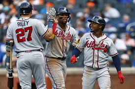
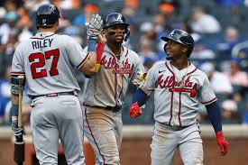

About the Braves
The Atlanta Braves are a professional baseball team based in Atlanta, Georgia. Established in 1871, they are one of the oldest continuously operating professional sports franchises in the United States. The team has undergone several name and location changes before settling in Atlanta in 1966.
The Braves are part of the National League (NL) East division and have a storied history that includes numerous division titles, pennants, and multiple World Series championships. Their most recent World Series win came in 2021, marking a significant milestone in the franchise's history.
The team is known for its passionate fan base, iconic tomahawk logo, and the "Chop," a chant and hand gesture widely recognized in the baseball world. The Braves play their home games at Truist Park, a state-of-the-art stadium located in the Cumberland area of Atlanta. Truist Park offers a unique experience with its adjacent entertainment district, The Battery Atlanta, which features restaurants, shops, and live entertainment.
Over the years, the Braves have been home to legendary players such as Hank Aaron, Chipper Jones, Greg Maddux, and John Smoltz. These players have left an indelible mark on the sport and continue to inspire new generations of baseball fans and athletes.
Team Roster
| Player | Position | Number |
|---|---|---|
| Ronald Acuña Jr. | Right Fielder | 13 |
| Ozzie Albies | Second Baseman | 1 |
| Matt Olson | First Baseman | 28 |
| Austin Riley | Third Baseman | 27 |
| Michael Harris II | Center Fielder | 23 |
| Marcell Ozuna | Designated Hitter | 20 |
| Sean Murphy | Catcher | 12 |
| Orlando Arcia | Shortstop | 11 |
| Jarred Kelenic | Left Fielder | 10 |
| Spencer Strider | Pitcher | 65 |
| Max Fried | Pitcher | 54 |
| Charlie Morton | Pitcher | 50 |
| Ian Anderson | Pitcher | 48 |
| Raisel Iglesias | Relief Pitcher | 26 |
| A.J. Minter | Relief Pitcher | 33 |
| Joe Jiménez | Relief Pitcher | 77 |
| Kirby Yates | Relief Pitcher | 39 |
| Collin McHugh | Relief Pitcher | 32 |
| Dylan Lee | Relief Pitcher | 55 |
| Nick Anderson | Relief Pitcher | 19 |
Photo Gallery
 
